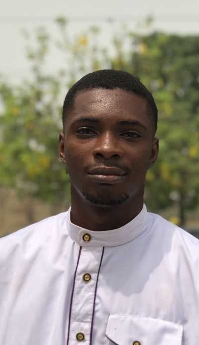

Benson Arosam | WDD 130
Arosam Benson is a budding software developer and student of BYU-Idaho. He is a writer of creative ideas and content for blogs. He has been writing professionally for six years with expertise in the tech and finance industry, He writes blogs, and headline articles for top magazines.